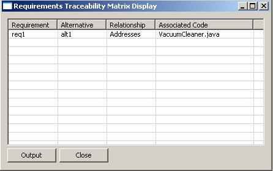
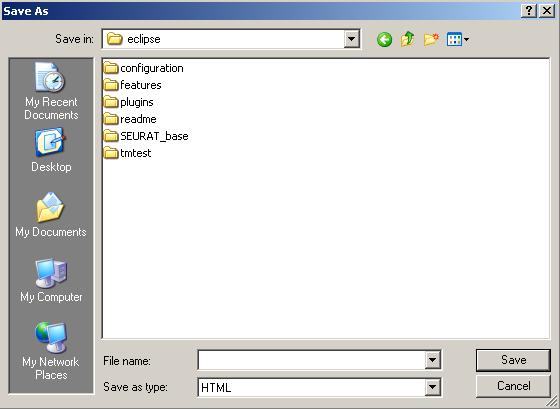

The Requirements Traceability Matrix report traces a project's requirements to the alternatives with which they are involved, the type of relationship between the requirements and the alternatives, and the artifacts associated with the alternatives. This functionality allows a user to trace their software design process from the beginning (requirements specification) to the end (program source code, or other artifacts) and show that their requirements have been met, among other potential uses.
The user first selects Generate Traceability Matrix from the Rationale Query Menu. The user will then be presented with the Requirements Traceability Matrix report in tabular format.
The "Output" button is used to export the report as a table in HTML format. Clicking on it will bring up the following screen which requests a path name for the output file.
